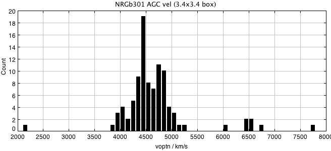
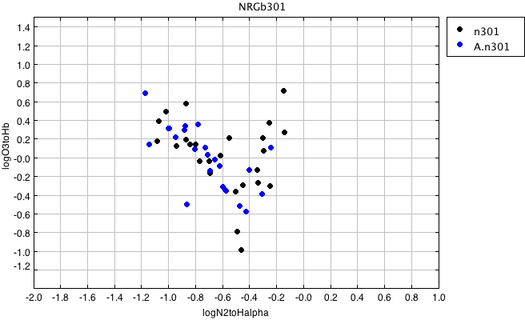

RA,Dec RA,Dec(deg) R(2Mpc) nz nopt cz sig logsig sig logLx dist*
WBL509 NRGb301 1428019+253410 217.0079 25.56944 1.7 15 24 4819 81 2.48 0.07 <41.70 0.00 72
At this distance, 2 Mpc = 1.7 degrees
So box should be RA > 215.31 & RA < 218.71
Dec > 23.87 & Dec < 27.27
Examine the broader velocity region in AGC in box of 3.4 x 3.4
Make subset from agcnorthminus1.csv:
radeg > 215.31 & radeg < 218.71 & decdeg > 23.87 & decdeg < 27.27

The group is isolated from surrounding structures, with peak between 4000 and 5000. With central velocity and velocity dispersion 4819 +/-301, 3sig=+/-906, 5sig=+/-1510. Defining sample, set velocity limits to be 3000 < vhelio < 5500Use agc+nsa.v012.mags+lines.appmags+faceHalpha.csv make a subset with: vhelio > 3000 & vhelio < 5500 RA > 215.31 & RA < 218.71 DEC > 23.87 & DEC < 27.27 ba90 > 0.4 So subset is: vhelio > 3000 & vhelio < 5500 & RA > 222.62 & RA < 230.62 & DEC > 23.87 & Dec < 27.27 & ba90>0.4 There are 88 AGC objects. Use agc+nsa.v012.mags+lines.appmags+faceHalpha.csv n301.agc.nsa.faceHa N = 50 all have ba90>0.4 Use a57+agc+nsa.v012.mags+lines.appmags+faceHalpha.csv n301.a57.nsa.faceHa N = 24 (all code 1,2) Code 1,2 # AGCnr radeg_1 decdeg_1 vopt M_i BA90 g-i vhelio logN2/Ha logO3/Hb v21 W50 sintp sn icode 241969 215.47 24.10722 5243 -18.86 0.690 0.698 5245 -0.47 -0.52 5250 189 1.92 14.7 1 245616 215.71167 24.7525 4421 -17.46 0.501 0.732 4308 -0.88 0.286 4667 29 0.43 8.0 1 245641 215.87833 24.24667 4448 -17.45 0.882 0.559 4358 -0.68 -0.15 4351 76 0.44 5.4 2 726516 216.20374 26.2275 4760 -17.11 0.854 0.737 4742 -0.59 -0.32 4805 254 0.6 4.3 2 732934 216.32251 25.29139 4581 -17.49 0.720 0.651 4577 -0.65 -0.02 4553 100 0.5 4.9 2 240332 216.345 26.46528 4744 -18.92 0.953 0.939 4743 -0.23 0.098 4700 27 0.35 5.9 2 732936 216.38417 25.71667 4080 -16.71 0.477 0.613 3972 -0.52 "" 3961 152 1.11 9.4 1 240334 216.41417 25.37833 5005 -18.82 0.511 0.494 4990 -0.72 0.100 4996 180 5.06 35.1 1 732937 216.52542 27.24417 4823 -16.76 0.635 0.473 4787 -0.80 0.079 4779 148 1.43 12.4 1 245731 216.5825 25.40083 5021 -18.54 0.754 0.420 4983 -0.78 0.347 4995 64 1.36 18.4 1 9265 216.85791 25.51444 4757 -19.86 0.405 1.056 4745 -0.30 -0.39 4764 218 1.06 7.4 1 241495 216.995 25.86639 4604 -17.35 0.407 0.409 4590 -0.87 0.332 4581 146 1.35 11.8 1 240393 217.12791 27.26611 3876 -18.33 0.481 0.537 3892 -0.62 -0.09 3897 219 1.33 9.8 1 9294 217.23708 25.55333 4108 -19.45 0.689 0.790 4137 -0.42 -0.58 4135 207 3.09 21.8 1 732947 217.35709 26.63139 4772 -16.70 0.808 0.492 4760 -1.14 0.136 4761 46 0.4 5.9 2 240410 217.40083 26.06361 4846 -18.37 0.965 0.561 4840 -0.40 -0.13 4839 61 1.16 15.2 1 245825 217.50999 24.885 4618 -17.90 0.941 0.649 4595 -0.71 0.024 4570 137 0.88 8.9 1 9340 217.7525 25.48972 4535 -19.54 0.889 0.542 4537 -0.57 -0.36 4545 137 3.39 29.3 1 242166 217.76625 26.45167 4204 -16.01 0.535 0.618 4210 -0.86 -0.50 4218 106 0.71 7.0 1 240425 217.78708 27.2375 4480 -18.70 0.613 0.034 4502 -1.17 0.683 4457 86 4.43 50.7 1 732960 218.13916 25.26444 4335 -17.00 0.726 0.447 4317 -0.99 0.305 4299 97 0.65 6.5 1 732965 218.32167 25.70583 4818 -16.29 0.543 0.518 4808 -1.00 0.303 4822 97 0.76 8.0 1 241204 218.33501 26.20722 4816 -18.96 0.417 0.629 4784 -0.58 -0.35 4783 237 6.05 37.4 1 726697 218.36043 25.65472 4917 -17.26 0.703 0.540 4839 -0.94 0.211 4821 96 0.81 8.4 1Now construct the BPT diagram of the two subsets:

Choose the subset which has logN2toHalpha < -0.5 : n301.agc.nsa.faceHa.SF.csv N = 34, of which 15 are NOT in ALFALFA n301.agc.nsa.faceHa.SF.notalfalfa.txt # AGCnr radeg decdeg NSAID ABSMAG_i g-i vhelio logN2toHalpha logO3toHb 732948 217.38084 26.05167 95659 -15.781037 0.688032999999999 3964.362168528 -0.6925095285072871 -0.1701661420314228 ** In Becky's list** 245756 216.86957 25.63194 95269 -17.474419 0.34464300000000136 4499.640934424 -0.6140468361030391 0.01731751018681628 ** In Becky's list** 245728 216.56459 25.46639 164981 -17.65007 0.9074249999999999 4939.257871872 -0.5042952317904851 -0.36974130012440964 ** In Becky's list** 732971 218.56084 25.59528 95686 -16.68554 0.4490550000000013 4820.8220443519995 -1.0840060992094056 0.1723285925167335 726703 218.43668 25.17611 95636 -16.55783 0.507044999999998 4440.34822256 -0.8691062678620959 0.18731450864286298 732967 218.37959 26.18722 95693 -16.246746 0.19275800000000132 4802.500855856 -1.0718133236880911 0.3865653093521502 726693 218.26167 26.12361 95692 -16.7061 0.7378134999999997 4812.594552704 -0.7704526372738473 -0.04451648421542209 732952 217.75917 26.0075 95670 -15.787312 0.6590240000000005 4466.279630976 -0.6970214823322124 -0.04778958490243772 732951 217.65959 25.16361 95645 -16.191933 0.6907509999999988 4345.167860064 -0.8438247857527778 0.1396651425985896 245833 217.59125 25.91278 95372 -16.824606 0.5641040000000004 4730.9551952639995 -1.017227716264625 0.48983317324940534 726610 217.24998 26.79611 95527 -15.828648 0.8722139999999996 4428.69530752 -0.9435712958397594 0.11716888558166458 240397 217.19415 27.25056 165055 -18.94927 0.8331330000000001 4417.872216736 -0.5509244582699951 0.2000403959629158 726560 216.66626 25.86 95273 -16.019278 0.5849360000000008 4343.592153312 -0.7981478836622112 0.13267040672504166 These show absorption in the SDSS spectra: 726698 218.37627 25.35056 95640 -16.26072 0.8207949999999986 4267.851803056 -0.5198371790534249 "" 241577 218.12543 26.18611 95682 -20.144604 0.9409960000000019 4739.86291496 -0.8715072692843941 0.5739205000230777 Becky's list of detected Ha includes 9, of which 3 are in NSA notalfalfa list: Of remaining 6, 4 are in NSA Face-on: # AGCnr radeg decdeg NSAID ABSMAG_i g-i vhelio logN2toHalpha logO3toHb 240380 216.96167 25.83806 95665 -19.885834 1.096467999999998 4405.072297504 -0.2464054763525502 -0.31064952948926583 241231 217.05499 25.94694 95661 -19.942888 1.1359150000000007 4022.5772780479997 -0.33735632371699253 -0.2746665083688503 245754 216.8475 25.87778 95663 -17.41432 0.9495809999999985 3975.271299616 -0.4882072101194345 -0.7947627399563725 726535 216.33624 25.70806 95278 -17.320753 0.9792230000000011 4602.737454576 -0.4508617282408562 -0.3002887873726352 One, AGC 726551, is in NSA, but does not make BA90 cut. One is not in NSA: #AGCNUM radeg decdeg 245785 217.1246 25.85 4905 face-on Thus there are 8 Ha, no HI galaxies in Becky's sample, plus 13 NSA star-forming, for a total of 21 targets.
| Cluster/group | References |
|---|---|
| WBL 509 = NRGb 301 = AWM3 |